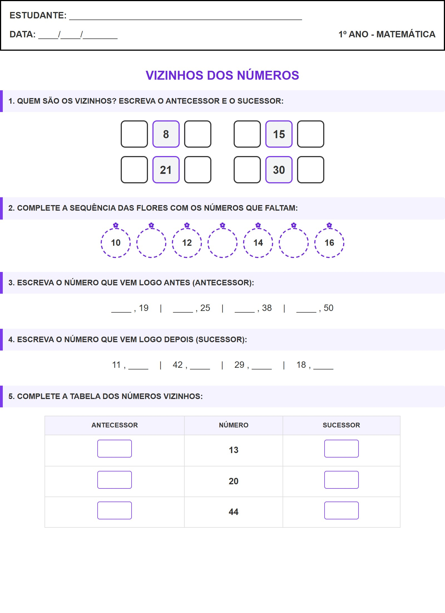

← Voltar ao Portal
ESTUDANTE:
_______________________________________________
DATA:
____/____/_______
1º ANO - MATEMÁTICA
Vizinhos dos Números
1. QUEM SÃO OS VIZINHOS? ESCREVA O ANTECESSOR E O SUCESSOR:
8
15
21
30
2. COMPLETE A SEQUÊNCIA DAS FLORES COM OS NÚMEROS QUE FALTAM:
10
12
14
16
3. ESCREVA O NÚMERO QUE VEM LOGO ANTES (ANTECESSOR):
____ , 19
|
____ , 25
|
____ , 38
|
____ , 50
4. ESCREVA O NÚMERO QUE VEM LOGO DEPOIS (SUCESSOR):
11 , ____
|
42 , ____
|
29 , ____
|
18 , ____
5. COMPLETE A TABELA DOS NÚMEROS VIZINHOS:
ANTECESSOR
NÚMERO
SUCESSOR
13
20
44
Visualização da Folha de Atividade
